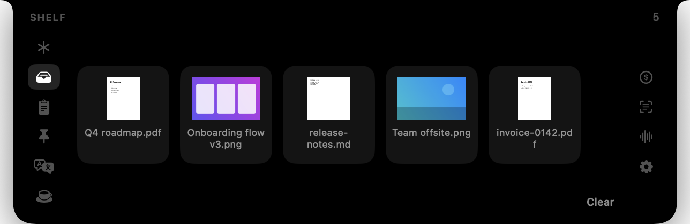

Cyclop is a free, open-source notch app for macOS. Invisible at rest; on hover it unfolds into a panel with your Claude sessions, a file shelf, clipboard history, snippets and an offline translator.

A tab's background work runs only while the tab is on a rail — switch one off in Settings and it costs nothing.
Your Claude Code sessions on this Mac, the ones that wait first: working, waiting or idle, and where each runs. When a session asks for a permission, puts a question or proposes a plan, the request appears in the panel and can be answered there, while Claude keeps asking in its own window and the first answer counts. A request slides the panel out by itself unless Open Panel for Requests is off in Settings, and a click on a session opens it where it runs. Connecting is one button in Settings.
Drag files into the notch and they wait there. Drag a card out
and the file goes wherever it is dropped. ⌘-click selects several and drags them as a group.
While the Clipboard tab is on, a screenshot copied to the clipboard is saved to
~/Pictures/Cyclop and lands here too, one copied on an iPhone included; a switch in
Settings turns this off.
The last 40 copies. A click puts an entry back on the clipboard.
A hand-kept list of what you are tired of retyping: an address, a phone number, an email. The same list is a plain JSON file you can edit in any editor.
Type on the left, the translation appears on the right — offline, using macOS's own translation, with no service and no account. English or Polish to Russian and back; the direction is taken from the script the text is written in.
Keeps the Mac from falling asleep: one button for no end, or a timer on an hour-and-minute wheel. Only the system stays awake; the screen still turns off and locks on its own. A switch keeps the Mac working with the lid closed.
An amount on one side, the other currency on the other; type into either. The rates come from a public table, refreshed every hour and whenever the tab opens, and only while the tab is on.
Records a call on two tracks, the microphone and everything the Mac plays, and writes the transcript on this Mac, with nothing sent anywhere. Your lines are Me, the other side is Speaker, lettered A, B, C when several voices can be told apart, and the language is detected for each stretch of the other side's speech. The audio is kept compressed, and Export puts the transcript and the audio into Downloads.
A script that scrolls under the camera at a speed you set. The notch is the one place on the screen a teleprompter belongs: the eyes stay on the lens instead of travelling to a window below it.
The notch category is crowded. These are the things Cyclop is measured on, all of them checkable in the source.
| One package | Swift, SwiftUI and AppKit, plus one package, FluidAudio, for the speech recognition of Meetings, and LocalVQE, an echo canceller built from source with CMake. About 14 000 lines of Swift. |
|---|---|
| Nothing asked at launch | Each request comes with the first press of the button that needs it: the microphone and system audio with Start Recording, control of Terminal or iTerm with Open in Claude on a terminal session. No Accessibility, no Screen Recording. |
| Offline translation | Translation runs on the device through macOS's own framework. No API key, no account, nothing leaves the machine. |
| Nothing collected | No telemetry, no analytics, no crash reporting. Two kinds of outgoing request in the whole app: Currency's exchange rates, hourly while the tab is on, and the speech models of Meetings, downloaded once by a button. |
| Off means off | A tab switched off in Settings stops its poll, observer or timer and costs nothing. The app is 17 MB on disk. |
.dmg from
the releases page,
open it and drag Cyclop into Applications. This link and the clone command below are
upstream's: this fork has no releases of its own.brew install cmake):git clone https://github.com/akalikbergenov/cyclop.git
cd cyclop && ./Scripts/bundle.sh releaseA build of your own is ad-hoc signed, so on another Mac it is allowed once in System Settings → Privacy & Security → “Open Anyway”.
Yes. On a Mac without a physical cutout Cyclop draws a synthetic notch exactly as tall as the menu bar and behaves the same way. It works on external displays too.
Nothing is asked at launch; each request comes with the first press of the button that needs
it. Start Recording in the Meetings tab asks for the microphone and for system audio recording,
and the first Export for Downloads. Cyclop requests no Accessibility and no Screen Recording.
The Claude tab asks once more: when you press Open in Claude on a session that runs in Terminal
or iTerm, or hand an approved plan off to a new terminal session, macOS asks whether Cyclop may
control that terminal, to select the session's tab or type the claude command.
Refused, Open in Claude only brings the terminal forward, and a hand-off stops with “Automation
is not allowed” and a Copy Command button.
Besides that, a file placed on the shelf from Downloads, Documents or the Desktop is something macOS asks about separately, and only at the moment the shelf is opened.
Free, MIT-licensed, and there is no paid tier. No subscription, no ads, no accounts, and nothing is collected.
No telemetry and no analytics of any kind. The only outgoing requests in the whole app are Currency's exchange rates, refreshed every hour while the tab is on, and the one-time download of the Meetings speech models, and everything else — clipboard, files, snippets, scripts — stays on the machine.
The Claude tab is not a network connection: it listens on a local socket that only you can
reach, and writes one entry into Claude Code's settings file, only when you press Connect to
Claude and with a copy of the file kept. SECURITY.md in the repository says what is left behind
if the app is deleted while connected. Only when you approve a plan into a new session does
Cyclop start claude itself, which spends your Claude tokens like any session.
A release should not: it is signed with a Developer ID and notarised by Apple. A build of your own is ad-hoc signed, so on another Mac it is allowed once in System Settings → Privacy & Security → “Open Anyway”.
A tab's background work, a poll, an observer or a timer, runs only while the tab is on a rail, so a tab switched off in Settings costs nothing. The Claude tab re-reads Claude Code's session files every five seconds while it is on.
macOS 15 and newer, on both Apple silicon and Intel. The floor comes from the translation framework the Translate tab uses.
Cyclop is built in the open under the MIT licence, and a good part of what is in it came from people who turned up in the first week: measurements from Macs the author does not own and fixes to things nobody else had noticed. Issues and pull requests are welcome.